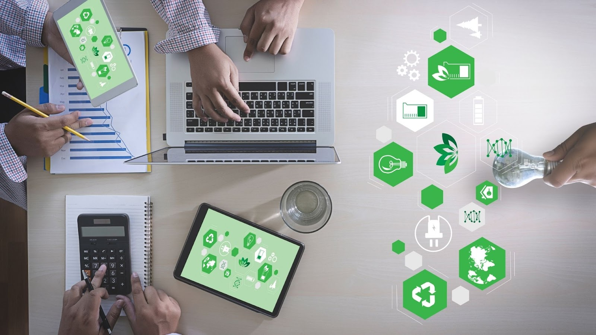

Gestão de Resíduos e Equipamentos Eletrônicos em Residências
Com o avanço da tecnologia, o consumo de dispositivos eletrônicos cresce continuamente, mas o descarte inadequado desses itens representa um desafio ambiental significativo. Equipamentos eletrônicos contêm materiais tóxicos, como chumbo e mercúrio, que podem contaminar o solo e a água. Por isso, uma gestão eficiente de resíduos eletrônicos é essencial para reduzir o impacto ambiental e promover a economia circular.
Práticas para a Gestão Eficiente de Resíduos Eletrônicos
Reutilização e Reparos: Antes de descartar, avalie se o equipamento pode ser consertado ou doado. Muitas vezes, pequenos reparos prolongam a vida útil dos aparelhos. Benefício: Diminui a necessidade de produção de novos dispositivos e reduz o volume de lixo.
Reciclagem Responsável: Leve os equipamentos antigos a pontos de coleta específicos, oferecidos por fabricantes, lojas de eletrônicos ou prefeituras. Benefício: Partes como metais, plástico e vidro são reaproveitadas, reduzindo a exploração de recursos naturais.
Vantagens da Boa Gestão de Resíduos Eletrônicos
Redução da Poluição Ambiental: A destinação correta dos resíduos eletrônicos impede a liberação de substâncias tóxicas no meio ambiente.
Preservação de Recursos Naturais: O reaproveitamento de materiais diminui a necessidade de extração de matérias-primas, como metais preciosos.
